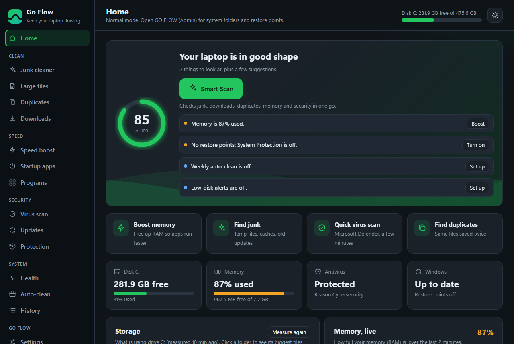

Go Flow
Keep your laptop flowing.
A free cleaner for Windows. Clear out junk, find what is filling your disk, free up memory and see your laptop's health at a glance.

Everything in one tidy window
Each tool shows you what it found first. You decide what goes.
Smart Scan
One button checks junk, old downloads, duplicates, memory and security, then lists what can be fixed.
Junk Cleaner
Removes temp files, browser caches, old update files, crash reports and thumbnails.
Storage and Large Files
A chart of what is filling your disk, and a list of the biggest files in any folder.
Duplicate Finder
Finds files with exactly the same content and always keeps one copy of each.
Speed Boost
Frees up memory, shows which apps use the most, and lets you control what starts with Windows.
Health and Security
Disk, battery and memory gauges, Windows Update status, and virus scans with Microsoft Defender.
Scan, review, clean
Scan
Press Smart Scan. Go Flow looks for junk, duplicates and other things worth fixing. Nothing is changed yet.
Review
See exactly what was found and how much space it takes. Untick anything you want to keep.
Clean
Confirm, and Go Flow does the rest. Your own files go to the Recycle Bin, so you can get them back.
Safe by default
Good to know
Is it safe?
Go Flow shows you what it found before anything is removed, and asks you to confirm. Large files, duplicates and old downloads go to the Recycle Bin. Your Desktop, Documents, Pictures and other personal folders are never touched by the junk cleaner, and you can add your own protected folders in Settings.
Is it really free?
Yes. There is no trial period, no paid version and no ads.
Why does Windows show a warning when I install it?
Go Flow is a new app and its installer is not yet signed with a paid certificate, so Windows SmartScreen may say "Windows protected your PC". Click More info, then Run anyway. You can check that your download is genuine with the SHA-256 checksum. On PCs with Smart App Control turned on, Windows blocks unsigned apps completely: see Support.
Does it replace my antivirus?
No. Go Flow does not have its own virus engine. It works with Microsoft Defender, which is built into Windows, to run scans and show results. If you use another antivirus, Go Flow shows that you are protected by it.
How do I uninstall it?
Open Windows Settings, go to Apps, then Installed apps, find Go Flow and choose Uninstall. This also removes its scheduled tasks.